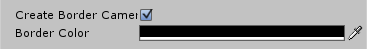
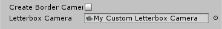
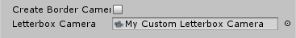
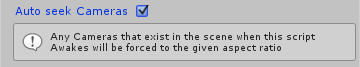
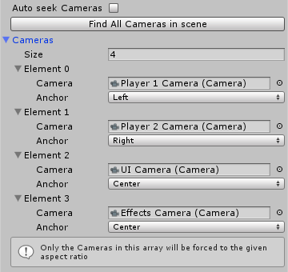
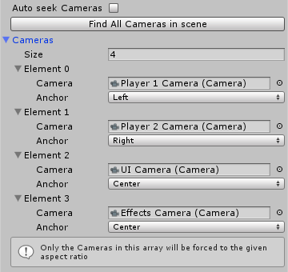

Standard Use
 Target
Viewport Ratio
Target
Viewport RatioA Vector2 which sets the Viewport ratio for all Cameras. You can set this using the provided interface or access this publically and safely in code. The default is 16:9.
Ratio on Awake
Forces each Camera Viewport to a re-calculated Viewport when this components' Start() function runs at the start of the scene. By default this is on as other-wise you would have to call CalculateAndSetAllCameraRatios() through your own code (though this function can be called at any time).
Ratio in Realtime
Forces each Camera Viewport to recalculate its Viewport every frame. This is useful if you wish to change the Target Viewport Ratio in real time or if you allow the user to resize the Game window.
Letterbox Camera
 The Letterbox Camera
renders the bars at the sides of the screen which appear when
the Target
Viewport Ratio doesn't match the screen ratio. Not having
a Letterbox Camera could cause ugly artefacts when changing the screen
size or altering the camera ratio.
There are two ways of creating a Letterbox Camera:
Automatically Create Border Camera
When Create Border Camera is true a Letterbox Camera will automatically be created on Start() at a depth of -100 and render to a color of your choosing. This is the default option.
 Custom Letterbox Camera
When Create Border Camera is false you must assign your own in-scene Camera to be a Letterbox Camera. This Camera will be ignored by the FindAllCamerasInScene() function so you can do whatever you want with it's viewport. This is useful if you want to do something clever with your Letterbox bars like render an image in the empty space (For an example try the Bitey Dragon Demo scene included with the package.)
There are two ways of creating a Letterbox Camera:
Automatically Create Border Camera
When Create Border Camera is true a Letterbox Camera will automatically be created on Start() at a depth of -100 and render to a color of your choosing. This is the default option.
 Custom Letterbox Camera
When Create Border Camera is false you must assign your own in-scene Camera to be a Letterbox Camera. This Camera will be ignored by the FindAllCamerasInScene() function so you can do whatever you want with it's viewport. This is useful if you want to do something clever with your Letterbox bars like render an image in the empty space (For an example try the Bitey Dragon Demo scene included with the package.)
Managing your Cameras

Auto
seek Cameras
When Auto seek Cameras is true, the Force Camera Ratios component will search for cameras in your scene on Start() and apply the same Viewport anchor to each. This is the default setting.
Manual Camera Managment
When Auto seek Cameras is false, you may manually assign and manage each Camera that needs Letterboxing. The Find All Cameras in scene button will call FindAllCamerasInScene() filling the Camera array quickly and defaulting each Camera Anchor to Center.
Camera Anchor
The Anchor enum anchors each camera when its' resized due to a viewport ratio recalculation. This is useful for when you have multiple cameras on screen, for example, split screen multiplayer. By setting up Player one's and Player two's Viewports adjacently and setting their respective Anchors to Left and Right, the plug-in will re-calculate their ratio and seamlessly keep their Viewports to the left and right of each other. It works similarly to Unitys' UI Anchoring system.
(For an example of this in action, try the Multi Camera Demo scene included with the package.)
When Auto seek Cameras is true, the Force Camera Ratios component will search for cameras in your scene on Start() and apply the same Viewport anchor to each. This is the default setting.
Manual Camera Managment
When Auto seek Cameras is false, you may manually assign and manage each Camera that needs Letterboxing. The Find All Cameras in scene button will call FindAllCamerasInScene() filling the Camera array quickly and defaulting each Camera Anchor to Center.
Camera Anchor
The Anchor enum anchors each camera when its' resized due to a viewport ratio recalculation. This is useful for when you have multiple cameras on screen, for example, split screen multiplayer. By setting up Player one's and Player two's Viewports adjacently and setting their respective Anchors to Left and Right, the plug-in will re-calculate their ratio and seamlessly keep their Viewports to the left and right of each other. It works similarly to Unitys' UI Anchoring system.
(For an example of this in action, try the Multi Camera Demo scene included with the package.)
Contact
Stuck?
If you're having trouble or have a question, further support is available. Feel free to send me an email via tom@tomsayshi.com or tweet at me via @Tom_SaysHi.
This document is still a work in progress and your experiences are very much part of it so don't be shy! Speaking of which;
Got an Opinion?
STILL feel free to e-mail me via tom@tomsayshi.com or tweet at me via @Tom_SaysHi.
Feedback, good or bad, is always welcome for incorporation into future updates and products!
Hey kid, wanna' play some Video Games?
I'm just gonna' leave this here. It's an arena game with laser swords called Arclight Cascade. What? It's my docs and I'll plug what I want to!
If you're having trouble or have a question, further support is available. Feel free to send me an email via tom@tomsayshi.com or tweet at me via @Tom_SaysHi.
This document is still a work in progress and your experiences are very much part of it so don't be shy! Speaking of which;
Got an Opinion?
STILL feel free to e-mail me via tom@tomsayshi.com or tweet at me via @Tom_SaysHi.
Feedback, good or bad, is always welcome for incorporation into future updates and products!
Hey kid, wanna' play some Video Games?
I'm just gonna' leave this here. It's an arena game with laser swords called Arclight Cascade. What? It's my docs and I'll plug what I want to!